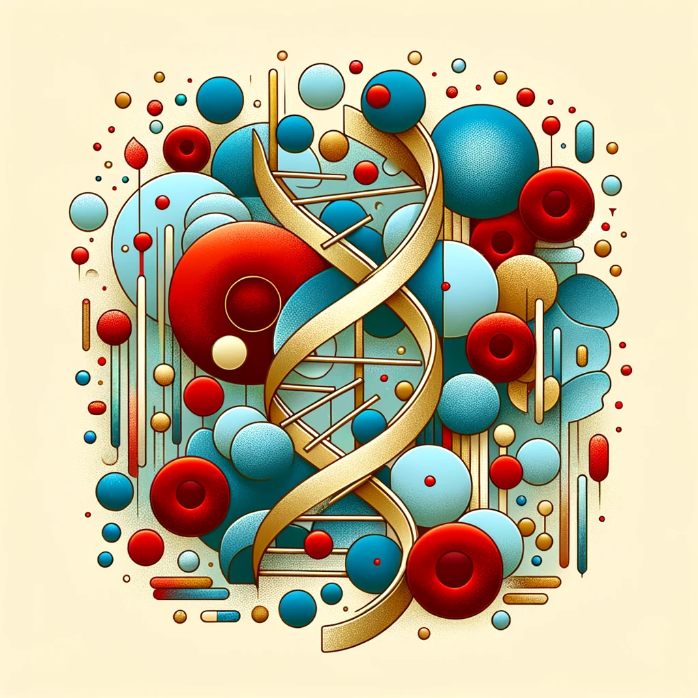

Charmaine Soco, PhD
Welcome!
PostDoc at Stanford University
Interests
Hematology, Stem Cells, Anemia, Single-Cell Omics
Stay connected with me through my social media links below.
@drcharmaine
charmaine-soco-7b527220b